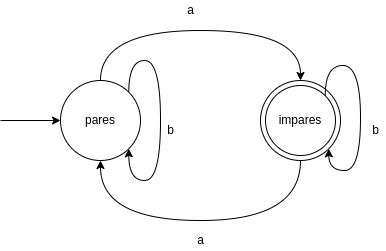

orden del día:
$(\Sigma,D,T,S_0,A)$
El siguiente DFA detecta un número impar de letras a.
A continuación se describe el mismo DFA sin un diagrama.
| estado | letra | nuevo estado |
| $pares$ | $a$ | $impares$ |
| $pares$ | $b$ | $pares$ |
| $impares$ | $a$ | $pares$ |
| $impares$ | $b$ | $impares$ |
¿Preguntas?
¡A trabajar!